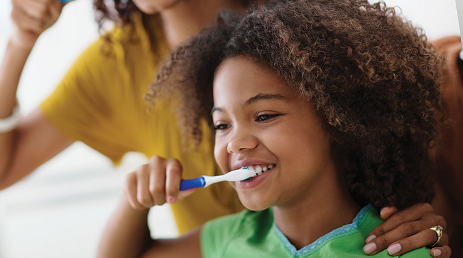
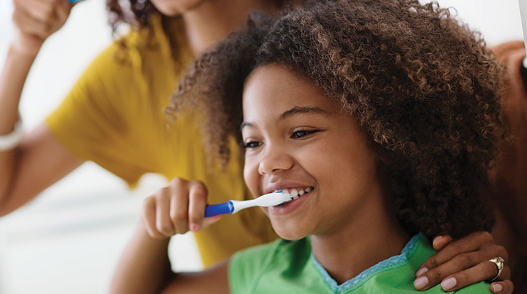

members - faq
Elegibility, ID Cards, Adding or Canceling Coverage
How do I obtain a copy of my dental benefits?
Once you've been enrolled in the group plan you'll receive a certificate outlining your dental benefits. Contact us if you haven't received a certificate. You can also access benefit information online by signing into your secure member account.
What is my ID number?
In most cases your ID number is your social security number. However, some plans use a policy number/division number/certificate number as the ID number.
Do I need an ID card?
No, you don't need an ID card. ID cards are provided with some plans as a convenient way to present your insurance information to the dentist. Some plans don't issue cards. In place of an ID card you may give your dental office your group number, which includes your policy/division/certificate number. Contact us if you don't know your group number.
Where can I get an ID card?
Members can access, view, print, and save their personalized ID card on our secure Member site. Log in or create a secure account and choose ID card from the Quick Links on the right side of the page.
Online ID cards are not available on all plans. If your secure account does not contain a link to ID cards under the Quick Links, please contact your HR department for information regarding ID cards.
How do I obtain a corrected ID card if there's an error?
Contact us for an updated ID card. Some Benefits Administrators send us your member information electronically; therefore, we may have to refer you back to your Benefits Administrator and they will have to update the information.
Can I upgrade my plan or add more coverage?
Most plans have one set of benefits available. If there is a choice among plan options or upgrades, your Benefits Administrator will typically share this information with you during your enrollment period. Contact your Benefits Administrator to inquire about upgrading your plan or adding coverage.
What is the Late Entrant limitation?
If you enroll in the group dental plan more than 31 days after becoming eligible, you are considered a late entrant. There may be benefit limitations set by Benefits Administrators and insurance carriers regarding late entrants. Refer to your certificate for more details.
What is an Elimination Period?
Some plans use an elimination period, which is a time period defined within the structure of your group dental plan that begins on your effective date and must be satisfied before benefits on certain procedures become available. Because Elimination Periods are sometimes called Waiting Periods, care should be taken not to confuse the two terms.
How long is a child considered an eligible dependent?
Child eligibility depends upon age and student status at the time of services. Refer to your certificate of coverage for details on whether or not a child is considered an eligible dependent.
Determining Benefits
How do I obtain my benefit information?
Sign into your secure member account and view your Dental Benefit Summary or refer to your certificate.
Who is authorized to obtain benefit information and claim status on my dental policy?
Do I need to get a pretreatment estimate for a procedure?
No, you don't need to have a pretreatment estimate. However, we recommend that a pretreatment estimate be submitted for all anticipated work that you consider to be expensive. Pretreatment estimates are the best way for you to determine your anticipated out-of-pocket expense. For more information, visit How to Submit a Claim or Pretreatment Estimate.
How many exams, cleanings, and x-rays are covered?
The frequencies of covered procedures are predetermined by your policy. To check your frequencies, sign into your secure member account, check your certificate or Contact us.
My periodontal specialist told me I should have three or four cleanings a year, but my plan only covers two…why?
The number of covered cleanings for each benefit period is established by the benefits and limitations/exclusions of your group dental plan. We are obligated to apply the plan provisions consistently for all members regardless of individual circumstances. Our denial of your additional cleanings doesn't suggest that the services shouldn't be performed. We do not intervene in treatment decisions between a dental provider and patient, nor do we determine dental necessity.
Is wisdom tooth removal (oral surgery) covered?
Depending upon your plan's benefits, oral surgery can fall under the Preventive, Basic or Major category. Refer to your certificate for your plan details.
A pre-operative x-ray film is required in order to review a surgical extraction because benefits are subject to our consultant's review. We recommend obtaining a pretreatment estimate for all dental work that you consider to be expensive. The estimate helps to eliminate misunderstandings by letting you know beforehand how much the plan can cover.
We also suggest submitting your oral surgery claim to your medical plan first as some medical plans have benefits for surgical extractions and general anesthesia or IV sedation.
How are orthodontic benefits paid?
Under most plans, benefits are released in a maximum of 8 quarterly payments with the first payment being released three (3) months after the banding date. Quarterly payments will automatically be released thereafter. Records are paid out separately. Benefits released for the records will reduce your remaining orthodontic maximum. For specifics on your plan's orthodontic benefits, sign into your secure member account or check your certificate.
What is a missing tooth clause?
A missing tooth clause explains any coverage limitations related to teeth missing or extracted prior to your effective date of coverage. The missing tooth clause can vary depending upon your plan, so be sure to check your certificate of coverage for details.
Choosing a Dental Provider
Can I see any dental provider or am I required to choose one from your PPO list?
You are always free to visit any dental provider you choose. However, you may benefit from greater out-of-pocket savings when you visit a provider on our PPO network.
For a description of your plan or to find out if you have PPO access, sign into your secure member account and review your Dental Benefit Summary or certifcate. Contact us if you have any questions about your choice of dental provider and how it may impact benefits.
What if I have a complaint about my dental provider?
Contact us if you have concerns about the experience you have had with a participating provider.
How do I know if my dental provider is part of the PPO network?
Search for your dental provider in the online provider directory on this website.
Do I need a referral to see another dental provider?
No. You are welcome to seek treatment from any provider you choose. If you have PPO coverage, we suggest using an Ameritas PPO provider to help maximize your benefits and lower your out-of-pocket expenses.
Can I visit a dental provider in a foreign country?
Yes, however we only honor assignment of benefits to providers in the United States. Since services provided outside the United States must be reimbursed directly to the member, foreign-based providers typically require payment in full before services are completed. We do not have a PPO network outside the United States.
The Appointment
What do I bring to my appointment?
If you have an ID card, take it with you. If you don't have an ID card, give the dental office your ID number or social security number. Contact us if you don't know your group number. You might also consider taking your certificate or a copy of your Dental Benefit Summary. To access either, sign into your secure member account.
How much will I have to pay at the time of my appointment?
You may be responsible for your deductible or copayment and coinsurance. However, some dental offices will not collect the deductible, copayment or coinsurance until after the claim has been processed by insurance. Contact your dental office to ask how their billing process works.
Do I need to bring a claim form?
In most instances you do not need to bring a claim form with you. If the dental office submits insurance claims for you, they already have claim forms. However, if the dental office requires that you file your own claim(s) with insurance, please make sure the dental provider gives you a statement. Complete only the top portion (Part 1) of a claim form with the patient and member information, attach a copy of the provider statement and submit to us at:
Group Claims
PO Box 82520
Lincoln, NE 68501
Fax: 402-467-7336
Claims Submission
Who submits the claim or pretreatment estimate?
If your plan has the PPO option and you go to a provider who is on the Ameritas PPO network, they will submit claims and pretreatment estimates for you. However, if you see a non-participating provider you'll need to contact your dental office and ask if they will submit the claims or pretreatment estimates for you.
How much time do I have to submit a claim?
We recommend that claims be submitted as soon as possible, as dental plans have a timely filing clause. Unless otherwise noted in your certificate, active insured members must submit claims to us within 90 days of the date of service. Claims submitted after 90 days will be denied due to failure to meet the timely filing requirements.
Will you send benefit payments to me or to the provider?
If services are performed in the United States, we will assign benefits according to how they are authorized on the claim form. If services are performed outside the United States, benefits will automatically be assigned to the insured member. If you visit a PPO provider, benefits are automatically issued directly to the provider based on their contractual agreement. For non-participating providers, benefits can be assigned to the insured member or to the provider. If you would like the benefits assigned to you, please leave the authorization line blank on the claim form.
What is your fax number for claims submission?
Claims that don't require x-ray films may be faxed to 402-467-7336.
What is your mailing address for claims submission?
Group Claims
PO Box 82520
Lincoln, NE 68501-2520
Do I have to use a certain claim form?
No. You are not required to use our claim form. You may use any standard claim form.
What information do you need for my student-dependent?
Contact us for the most current information.
Understanding Payment and our EOB (Explanation of Benefits) Statements
How do I check claim information?
To access claim information online, sign into your secure member account or contact us.
How do I get a copy of an EOB?
Contact us for a copy of your EOB.
Why did you take the deductible/copayment again on my claim? I already paid it to the dental office.
In most cases we are not collecting the deductible/copayment twice (once by us and once by the dental office). If the provider collected the deductible/copayment from you, we note the deductible/copayment for our records and this is reflected on your EOB. Contact us if you feel an error has been made on your EOB.
Why are you paying the dental office? I already paid them.
We pay according to how benefits are authorized on the claim form. If you sign the authorization field on the claim form, benefit payment is released to the dental office and we will pay benefits to your dental office. If your plan has the PPO option and you visit a participating provider, benefits will be assigned to them per their contractual agreement. Contact us if you are being charged up front for the full amount of your services by a participating provider.
Why did you pay me? Payment was supposed to go to the dental office.
We pay according to how benefits are authorized on the claim form. If you sign the authorization field on the claim form, benefit payment is released to the dental office and we will pay benefits to your dental office.